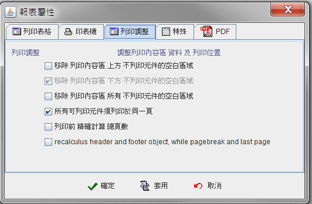

|

7.3 報表屬性 (report properties)
列印作業規格 (print format)
指定印表機 (dedicated printer)
列印調整 (printing output adjustment)
PDF 字型與編碼
(pdf cjk font and encoding)
關於瀏覽器印表作業的
Java™ 安全機制 (Java™ print security policy)
jLIVE Builder™ 報表系統，經由報表的屬性設定
(report
properties)，設計師可以靈活地提供使用者在各種不同的列印作業中，能有適當的報表作業流程。諸如：
-
使用資料來源列印程序或客製列印程序
(datasource or customer printing flow)。
-
使用者是否需要列印預覽
(preview)。
-
使用者是否需要印表機設定
(printer setup)。
-
使用者是否需要內定複製份數
(copies)。
-
是否使用自定紙張大小
(customer size)。
-
是否需按各類報表動態指定印表機
(printer)。
-
是否需機動調整空白列 (output
adjustment)。
編輯報表屬性，可以由工作列上方的圖示
編輯  ( 編輯報表屬性 ) 點擊後出現設定視窗。
( 編輯報表屬性 ) 點擊後出現設定視窗。
▲Top
列印作業規格 (print format)
-
列印作業 (print job)：

-
客製列印程序 (customer printing flow)：由設計師自行控制列印程序，參閱客製列印程序說明。
列印作業前運算式
(before print job formula)
列印內容區
列印一筆前運算式 (before content print formula)
列印內容區
列印一筆後運算式 (after content print formula)
結束列印控制運算式
(end print control formula)
下一筆列印控制運算式 (next print control formula)
列印作業後運算式
(after print job formula)
-
預覽列印
(preview window)：
-
每頁複製 (copies) ：每頁複製份數。
-
表頭、表尾位置 (header & footer location)：
-
表頭(點)
(header dot)：列印表頭分隔線的位置，以像素為單位。
-
表尾(點) (footer dot) ：列印表尾分隔線的位置，以像素為單位。
-
表頭(英吋) (header inch)：列印表頭分隔線的位置，以英吋為單位。
-
表尾(英吋) (footer inch)：列印表尾分隔線的位置，以英吋為單位。
-
頁面 Media 類別 (page media type )：各式世界通用尺寸模式可供選擇。如 iso、jis 等等，
目前支援73種尺寸模式。
-
頁面顏色 (page color type)：彩色列印或者是單色列印。
-
彩色 (color)
-
單色 (monochrome)
-
單雙面列印 (side)：單雙面列印選項。
單面列印
(one side) 雙面列印
(duplex) 翻轉列印
(tumble)
▲Top
指定印表機 (dedicated printer)
列印調整 (printing output adjustment)
jLIVE Builder™ 報表系統，設計師在列印表身區域設計時，將所要列印資料以可列印元件，擺設在列印區，列印時，系統會根據列印限制運算式的計算結果，決定是否列印出此可列印元件是否列印出結果值。由於此動態且彈性化的列印機制，使得列印結果可以符合各種報表需求。但是逐筆列印時，被列印限制運算式，所動態限制不列印的元件列印區域，將會產生空白區域。列印調整的設定，即是動態調整其他可列印元件輸出的位置，以避免空白區域的產生。

-
移除列印內容區上方不列印元件的空白區域：
當逐筆列印時，A 與 B 被限制不列印時，可列印的 C 與 D
相對位置不變， C 上緣 (y-axis) 將提升至 A 上緣 (y-axis) 位置列印。如果 A
被限制不列印時，可列印的 B 與 C 與 D 相對位置不變， B 上緣 (y-axis)
將提升至 A 上緣 (y-axis) 位置列印。
-
移除列印內容區下方不列印元件的空白區域：
當逐筆列印時，C 與 D 被限制不列印時，下一筆列印的上緣 (y-axis)
開始位置是由 B 的下緣 (bottom line) 起算。移除列印內容區下方不列印元件的空白區域
為系統預設屬性。
-
移除列印內容區所有不列印元件的空白區域：
當逐筆列印時，系統會檢測不列印元件橫向區域是否有其他要列印元件，如果存在，則不做任何處理，否則處理此不列印元件的空白問題。例如：如果只有 C
不列印，則系統不作任何處理，因為其橫向區域中的 B 須列印，反之如果只有 B 不列印，其橫向區域中 A 及 C
須列印，系統亦不作任何處理。當 C 與 B 同時不列印時，D 之上緣將提升至 C 的上緣位置列印。
-
所有可列印元件須列印於同一頁：

當逐筆列印至表尾 (footer) ，系統要列印 A 、B、 C 、D
時，將會超過表尾線 (footer)，如果設定所有可列印元件須列印於同一頁的屬性，則
A 、B、 C 、D 將移至下一頁列印；如果沒有設定所有可列印元件須列印於同一頁的屬性，則
A 、B 將列印於此頁， C 、D 將移至下一頁列印。
-
列印前精確計算總頁數：
jLIVE Builder™ 報表系統，列印前將自動計算所有擺置於表身列印區 (content) 的列印元件總合高度，扣除換頁元件區域及具有
Freeze bounds
屬性的元件，作為一筆資料記錄列印時的預設高度，並以此高度據以計算預估總頁數，由於
jLIVE Builder™
報表系統提供強迫換頁及基於運算條件才列印的機制，所以實際的總頁數在某些情況下並不相等於預估總頁數，如果需要精確的總頁數，設計師需設定報表屬性的【列印前精確計算總頁數】，系統將先行擷取所有資料及運算列印資料，使用者在列印前所需等待的時間相對較長，系統亦不能發揮列印完一頁，即刻拋棄該頁列印資料的功能，所以列印前精確計算總頁數，比較不適用於數百或數千頁的大資料列印
，但使用者可以得到精確的總頁數。
▲Top
PDF 字型與編碼
(pdf cjk font and encoding)
jLIVE Builder™ 採用 iText free Java-PDF library (AS-IS) 作為 PDF
輸出介面程式庫。iText 網址：http://www.lowagie.com/iText/
(iText
Library - Copyright (C) 1999-2004 by Bruno Lowagie and Paulo Soares. All Rights
Reserved.)
jLIVE Builder™ 應用程式執行期，輸出 PDF 時會檢測使用者端 (client)
系統語系，中日韓語系的使用者端會根據該語系選取以下所預設使用的字型與編碼。設計師亦可指定 unicode 字型，例如：MSWORD 常用的
Arialuni.ttf (編碼除非特殊否則請用 Identity-H)。 自行紙定字型須確定該字型存在於 PDF Reader
端的作業系統，否則中日韓語系的字可能無法正確顯示。MS Windows 若作業系統不存在於 C: 或 D: 時，須給定絕對位置。
報表預覽列印時，使用者可以按下 PDF 輸出按鈕，系統會出現輸入檔案名稱的視窗，選擇或給予檔名後，將列印結果輸出至 PDF。
設計師可以使用運算式直接將報表輸出成 PDF，參照 運算式 Report2Pdf(filename)
。
▲Top
關於瀏覽器印表作業的
Java™ 安全機制 (Java™ print security policy)
由於
Java™ 在瀏覽器上執行時，會受 Java™ 安全機制 (security
policy)
的控管，不允許未經授權的程式碼存取使用本機資源，而印表機是本機的資源之一所以亦受其限制。在Java™
1.30 的 JRE (Java Runtime Environment)，使用者在瀏覽器執行印表作業時，會出現詢問使用者是否允許的對話視窗，經使用者確定後即可進行列印作業。而Java™
1.40 的 JRE 卻會不斷的出現詢問使用者是否允許的對話視窗。如果希望在使用者執行時不要出現詢問視窗，則須設定
Java™ 安全機制 (security policy) ，授權使用本機資源。在
Java security 中授權
class 來源檔的權限, 請參考以下說明：
C:\Program Files\Java\j2re1.4.0\lib\security\java.policy
加入下列內容
：
使用 HTTP 啟動程式 ：
grant codeBase "http://來源IP或主機/-" {
permission java.security.AllPermission;
};
使用本機檔案(HTML) 啟動程式 ：
grant codeBase "file:c:/HTML所在路徑/-" {
permission java.security.AllPermission;
};
其中 來源IP或主機，為置放
Html 的 Web 主機IP或名稱。c:/HTML所在目錄，為啟動的
HTML 路徑。
▲Top
Copyright © 2001~
2004 Probe Technology . All Rights Reserved.
Questions, comments,
and suggestions to Service@probe.com.tw
|